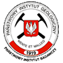

Państwowy Instytut Geologiczny Państwowy Instytut Badawczy

Centralna Baza Danych Geologicznych
coraz bardziej dostępna geologia
Architektura bazy
Dostęp do danych w CBDG jest realizowany w architekturze wielowarstwowej. Serwery zdalnego dostępu i aplikacji internetowych umożliwiają dostęp do bazy spoza PIG Warszawa, na przykład z oddziałów regionalnych Instytutu, z Ministerstwa Środowiska, z innych instytucji wykorzystujących dane z bazy lub wprowadzających dane do niej.

CBDG zapewnia również obsługę danych przestrzennych oraz gwarantuje ich spójność z danymi opisowymi w czasie ich aktualizacji. Przechowuje referencyjne warstwy informacyjne typu topograficznego lub administracyjnego oraz geologiczne, z których korzysta wiele ważnych systemów informatycznych PIG, takich jak: MIDAS, SOPO, IKAR.
Publiczny dostęp do bazy zapewnia serwis internetowy CBDG. Umożliwia on wyszukiwanie najważniejszych danych, zarówno tekstowych, jak i przestrzennych (GIS). Wspomaga również zamawianie map seryjnych PIG (SMGP, MHP i MGGP). Serwis funkcjonuje na oddzielnym serwerze, na którym dane są regularnie aktualizowane na podstawie zasobów CBDG.
geoportal.pgi.gov.plBezpłatny dostęp do danych
Podsystemy
Na Centralną Bazę Danych Geologicznych składa się szereg ściśle powiązanych podsystemów gromadzących informacje z różnych dziedzin geologii:
- DOKUMENTY – dane katalogowe opracowań geologicznych, map, zdjęć lotniczych i satelitarnych z archiwów na terenie całego kraju,
- OTWORY WIERTNICZE – informacje o otworach wiertniczych wykonanych na terenie Polski,
- RDZENIE – szczegółowe dane o skrzyniach z rdzeniami zgromadzonymi w archiwach rdzeni wiertniczych i próbek,
- PUNKTY BADAWCZE – dane o wszelkich punktach badań, (które nie są otworami wiertniczymi), ściśle powiązany z podsystemem ANALIZY,
- ANALIZY – dane analityczne lub pomiarowe z otworów wiertniczych lub punktów badawczych,
- GEOFIZYKA – informacje o wykonanych różnego typu badaniach geofizycznych oraz dane uzyskane w wyniku tych badań,
- KOLEKCJE GEOLOGICZNE –informacje o zbiorach geologicznych w Muzeum w Warszawie i oddziałach regionalnych PIG-PIB,
- JASKINIE – informacje o jaskiniach z terenu Polski.
Bezpłatny dostęp do danych
Słowniki bazy
Przeznaczenie słowników
Podstawowym zadaniem geologicznych baz danych jest zapewnienie użytkownikom możliwości efektywnego wyszukiwania informacji. Reprezentacja danych geologicznych w systemach informatycznych nastręcza zawsze dużo trudności. Przyczyną jest niejednorodność danych źródłowych, niejednoznaczność nazewnictwa, stosowanie różnych konwencji terminologicznych. Powyższe kłopoty rozwiązywane są zwykle przez opracowywanie słowników, które stają się standardem przyjętym w konkretnym systemie informatycznym, a niekiedy też w całym kraju. Zawartość słowników musi zapewniać możliwie pełną zgodność z danym źródłowymi, a także ze współczesną terminologią fachową. Struktura słowników musi umożliwiać efektywne wyszukiwanie danych.
W toku projektu CBDG wykonano kilkadziesiąt słowników, które następnie włączono do bazy. Niektóre słowniki pozyskano z zewnątrz (np. słownik miejscowości GUS), inne zaadaptowano i rozszerzono (np. słownik arkuszy map SMGP). Większość słowników przygotowano w Pracowni CBDG, zwykle przy współpracy specjalistów z zakładów merytorycznych Instytutu, niekiedy także spoza PIG. Słowniki CBDG są modyfikowane i rozbudowywane, zgodnie z wymaganiami związanymi z rozwojem zasobów danych gromadzonych w systemie.
Wykaz słowników
Baza CBDG zawiera kilkadziesiąt słowników. Najważniejsze z nich to:
- słownik miejscowości (wg GUS),
- słownik jednostek administracyjnych (wg GUS),
- słownik arkuszy map seryjnych (1:50 000, 1:100 000, 1:200 000, 1:300 000),
- słownik regionów geograficznych Polski,
- słownik jednostek chronostratygraficznych,
- słownik jednostek litostratygraficznych Polski,
- słownik jednostek strukturalnych Polski,
- słownik skał,
- słownik cech skał,
- słownik struktur sedymentacyjnych,
- słownik struktur tektonicznych,
- słownik cech struktur tektonicznych i sedymentacyjnych,
- słownik parametrów struktur tektonicznych i sedymentacyjnych,
- słownik minerałów,
- słownik skamieniałości,
- słownik metod badawczych,
- słownik instytucji,
- słownik badań geofizyki wiertniczej.
Słownik jednostek litostratygraficznych Polski
Słownik jednostek litostratygraficznych Polski (w wersji podstawowej) zawiera informacje o ponad 2600 krajowych jednostkach litostratygraficznych nieformalnych lub formalnych.
Słownik opracowali: dla prekambru i paleozoiku - prof. dr hab. Ryszard Marcinowski z Wydziału Geologii UW; dla mezozoiku i trzeciorzędu - dr Jerzy Piotrowski (PIG) i prof. Krystyna Piotrowska (PIG), przy czym wykorzystano pierwszą wersję słownika, przygotowaną przez dra hab. Ireneusza Walaszczyka (Wydział Geologii UW).
Internetowy dostęp do słownika pozwala, przeglądać go i przeszukiwać a także zgłaszać swoje propozycje zmian czy uzupełnień w słowniku. Słownik dostępny jest jednie w polskiej wersji jezykowej.
 geoportal.pgi.gov.pl
geoportal.pgi.gov.pl
Bezpłatny dostęp do danych